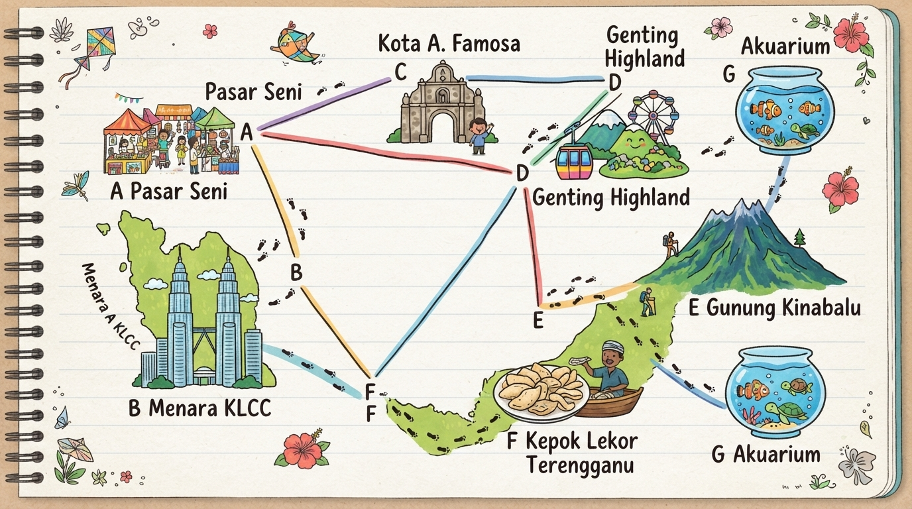

Rujuk peta di bawah! Cari jalan untuk melawat SEMUA LOKASI (A, B, C, D, E, G) sebelum ke penamat F (Kepok Lekor Terengganu).

Laman web permulaan. Rujuk peta dan pilih pautan untuk meneroka laluan!
📍 Kemajuan Lokasi Dilawati (1/7):
⚠️ Lawati semua lokasi terlebih dahulu!